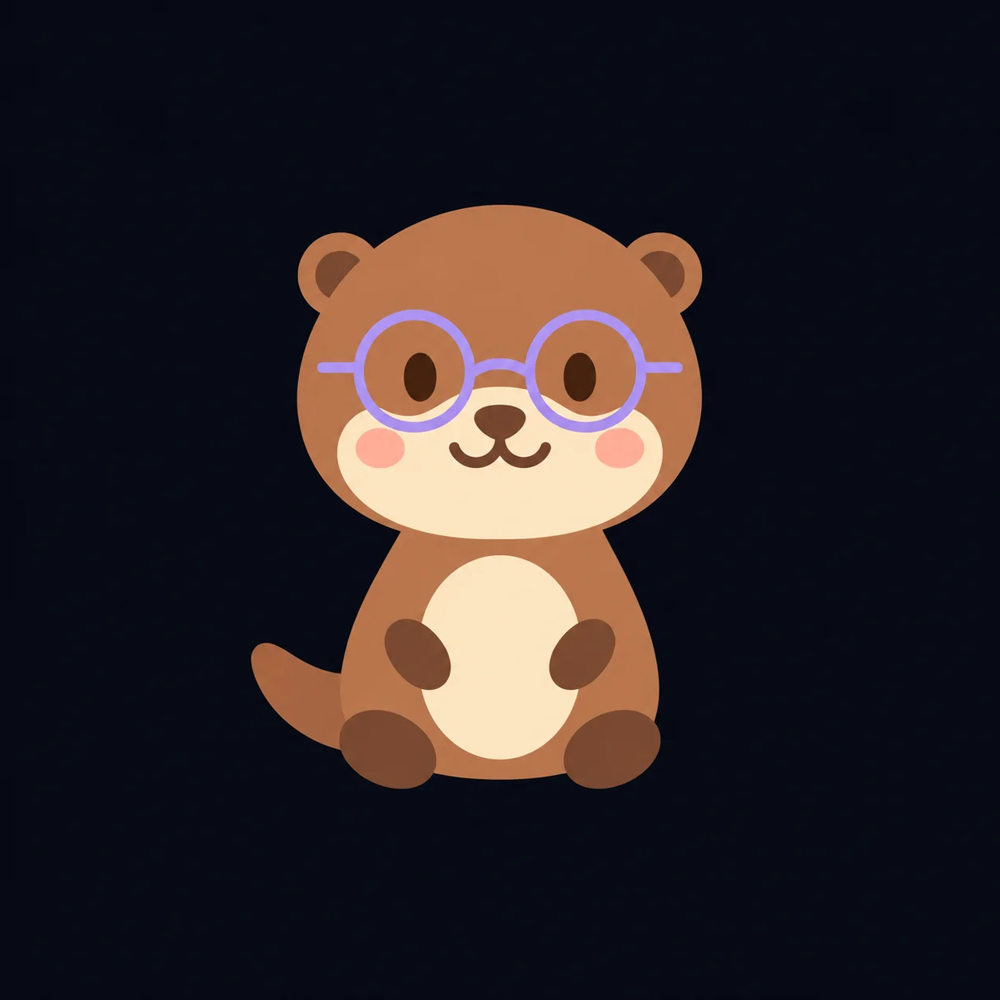

Tap a sound to hear it.
ship
Take your time. Say the word aloud.
PHONICS PRACTICE
Blend the sounds, find the picture and learn with your animal teacher. Tap a sound whenever you need a little help.
Tap a sound to hear it.
Take your time. Say the word aloud.
Every word is a new discovery. Collect stamps with all your safari friends.
Tap a pattern to see the words you’ve explored.

A LITTLE HELP FOR GROWN-UPS
You don’t need to be a phonics expert. Here’s a quick guide to the sounds your child is exploring.
A digraph is two letters that represent one sound. Keep them together when sounding out the word.
In ship, there are four letters but three sounds: sh · i · p.
A split digraph is two letters representing one vowel sound, with another letter between them.
In cake, a and e work together to make the ai sound. Blend c · ai · k. The final e is not sounded separately.
Other examples: i–e in bike, o–e in home, u–e in cube and e–e in these.
A phoneme is a speech sound. A grapheme is the letter or letters used to write a sound. A trigraph uses three letters for one sound, such as igh in night.
Blending means joining sounds to read a word: sh · i · p → ship. Segmenting means breaking a spoken word into sounds to help spell it.
Some words have unusual spellings. For example, have does not use the same a–e sound as cake.
KS1 offers early blending and practice with common spelling patterns. KS2 can revisit these sounds in more challenging words.
Choose the level that suits your child’s reading, even if it differs from their school year. Follow the sounds and terminology used by their school’s phonics programme; teaching order varies.
The passport celebrates practice in this game. It is not a reading assessment.
Sound Safari supports practice alongside school reading. If you’re unsure which sounds to practise next, ask your child’s teacher.